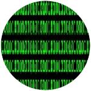
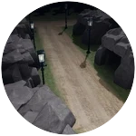
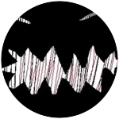

Badges:

1. Error Badge: Demo Monster Badge
You have to not move for 100 seconds to get the badge

2. Give me space badge: Glich Monster badge
You get the badge when you die by Glich

3. Lost & Found badge: Pass the game badge
You will get this badge when you beat the game

4. Short Life badge: Died twice badge
You die once and then buy a revive and then die once again

5. Welcome badge: Join player badge
You will receive the badge when you log in for the first time

6. A Group victory: Join group badge
You will get this badge when you join our Roblox group

7. Sorry badge: Noker monster badge
You get the badge when you die by Noker

8. Who are you badge: Lefs monster badge
You get the badge when you die by Lefs